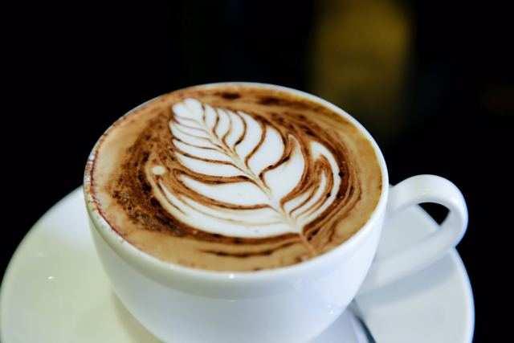
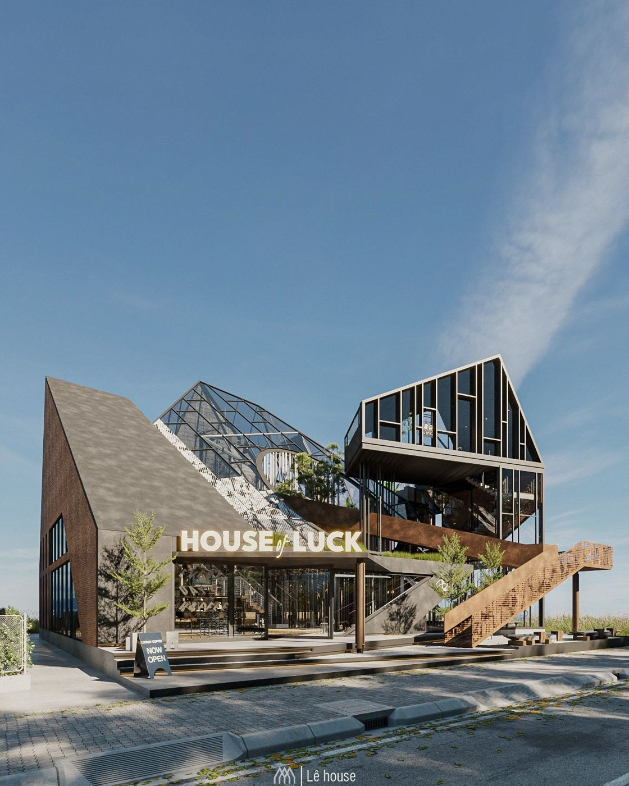
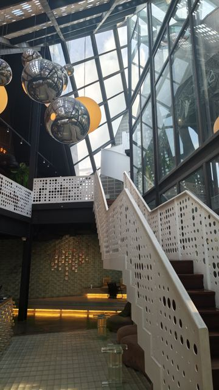
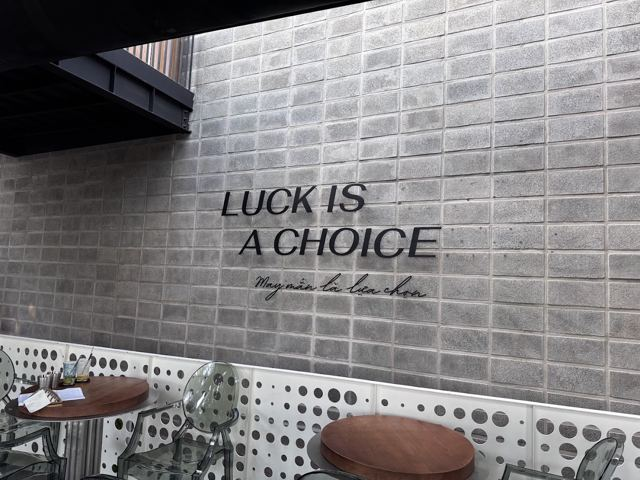
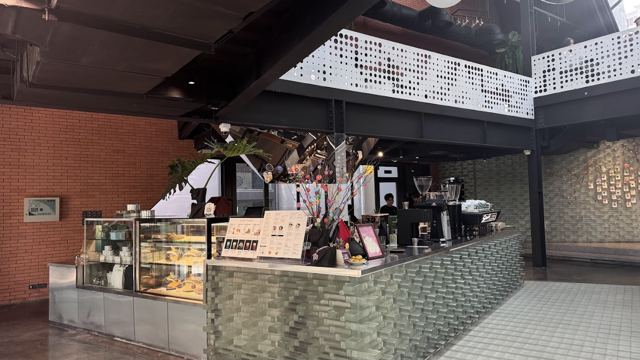

Cà phê mắc khén
Espresso phục vụ kèm kem mắc khén. Rót cà phê vào kem cùng đá, khuấy đều cho hai mùi hương hòa quyện.
Liên hệ để báo giáQuán cà phê · Thủy Nguyên, Hải Phòng
Thép, kính và giếng trời: một “ngôi nhà may mắn” cho buổi cà phê sáng, giờ làm việc yên tĩnh hay chiều cuối tuần cùng cả nhà.

Câu chuyện
House Of Luck (HOL) mang phong cách công nghiệp đương đại: những khối thép, kính và gạch kính lấy cảm hứng từ chuyện cổ tích Từ Thức gặp tiên. Ba khối nhà mô phỏng núi, giếng trời đón nắng, và cầu thang thép dẫn lên tận đỉnh như đưa khách tới “miền tiên cảnh”.
Ở quầy bar lát gạch kính là chiếc máy pha Spirit Triplette (Hà Lan). Đồ uống dùng thảo mộc Việt như mắc khén, lá nếp, hoa nhài; món ăn là đặc sản Hải Phòng được biến tấu.
“Luck is a choice”: dòng chữ trên tường quán.



Không gian
Quán rộng, yên tĩnh; tầng 2 hợp ngồi làm việc. Cần ổ điện? Nhân viên sẵn lòng hỗ trợ.
Nhà bóng mini cho bé, khu trong nhà và ngoài trời, bãi đỗ xe rộng rãi.
Cầu thang thép, giếng trời, quầy gạch kính: “rất nhiều ánh sáng”, như khách nhận xét.
Nhiều góc riêng tư lẫn khu rộng; quán từng tổ chức show thời trang dịp khai trương.
Ảnh thật
Đánh giá Google
409 đánh giá
“Không gian độc đáo, mới mẻ, vừa thoáng vừa có góc riêng tư, check in hoặc họp bạn bè đều được. Có 1 nhà bóng mini cho trẻ con… Nhân viên nhiệt tình thân thiện”
Phuc dang huu · ★★★★★
“Quán rất rộng và yên tĩnh, ngồi thoải mái nhiều chỗ. Tầng 2 hợp để làm việc. Đồ uống ổn thôi nhưng bánh rất ngon.”
Chi Duong Linh · ★★★★★
“Đồ ăn và đồ uống ngon, lạ sáng tạo. Mình vào mà wow vì không gian rất rộng và phục vụ nhiều mục đích khác nhau.”
Nguyên Vũ · ★★★★★
“Quán thiết kế đẹp, thoáng và nhiều ánh sáng… Có bãi đỗ xe rộng rãi, có nhà bóng cho trẻ con. Có đủ không gian trong nhà lẫn ngoài trời.”
Long Leo · ★★★★★
“Quán siu xink iu rộng rãi, nhân viên nhiệt tình lắm. Mình cần ngồi chỗ không ổ điện cũng giúp mình nối ổ điện ra”
Quynh Chi Pham · ★★★★★
Hỏi đáp
Quán mở cửa từ 07:00 đến 23:00 tất cả các ngày trong tuần, kể cả Thứ Bảy và Chủ Nhật.
Có. Quán rộng, nhiều chỗ ngồi; khách thường chọn tầng 2 để làm việc vì yên tĩnh. Nếu cần ổ điện, bạn có thể nhờ nhân viên hỗ trợ.
Có. Quán có nhà bóng mini cho trẻ em, khu trong nhà lẫn ngoài trời, và bãi đỗ xe rộng.
Liên hệ để báo giá: gọi 0522 955 666 hoặc nhắn fanpage Facebook của quán.
Số 6 Khu Đông Quán 1, Thủy Nguyên, Hải Phòng (cạnh SCES English). Bấm Chỉ đường trên trang để mở Google Maps.
Ghé quán
Số 6 Khu Đông Quán 1, Thủy Nguyên, Hải Phòng
Cạnh SCES English
| Thứ Hai | 07:00 – 23:00 |
| Thứ Ba | 07:00 – 23:00 |
| Thứ Tư | 07:00 – 23:00 |
| Thứ Năm | 07:00 – 23:00 |
| Thứ Sáu | 07:00 – 23:00 |
| Thứ Bảy | 07:00 – 23:00 |
| Chủ Nhật | 07:00 – 23:00 |